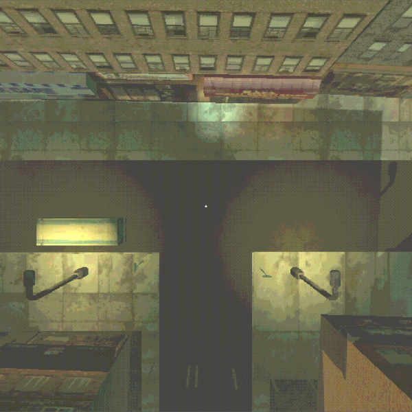
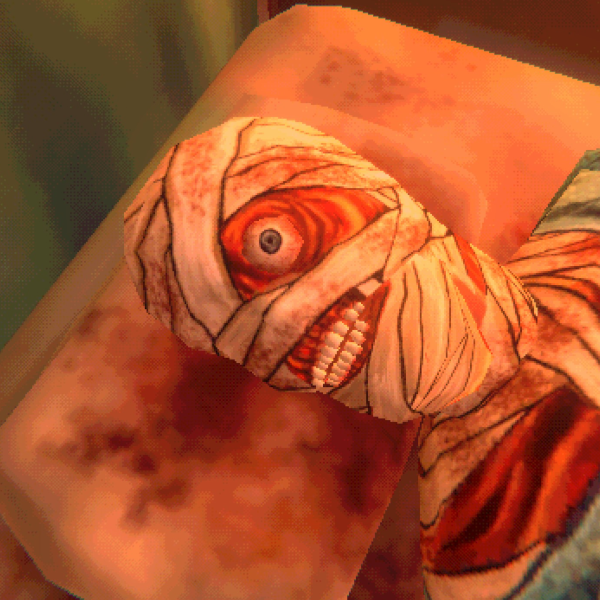

Work

Discards
A narrative-driven game exploring identity, suffering, and digital consciousness.
View Project →

Complicity and Collapse in MOUTHWASHING
A critical analysis of MOUTHWASHING, exploring how fractured storytelling and limited player agency create an experience of guilt, helplessness, and moral consequence.
View Project →